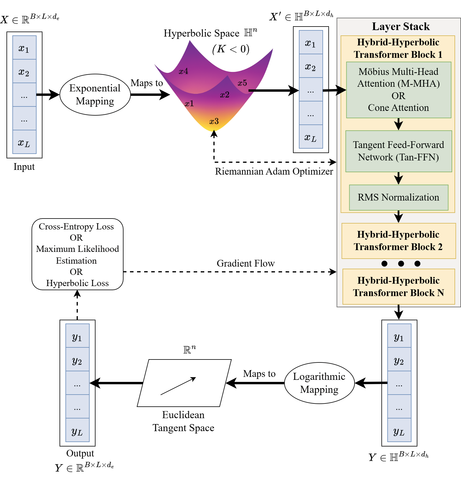
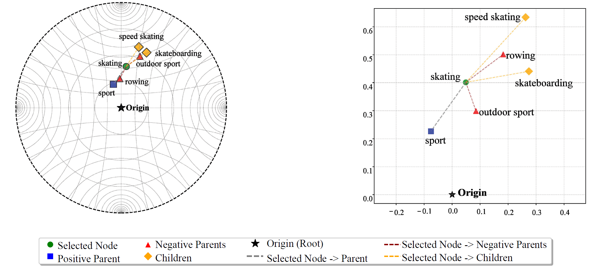
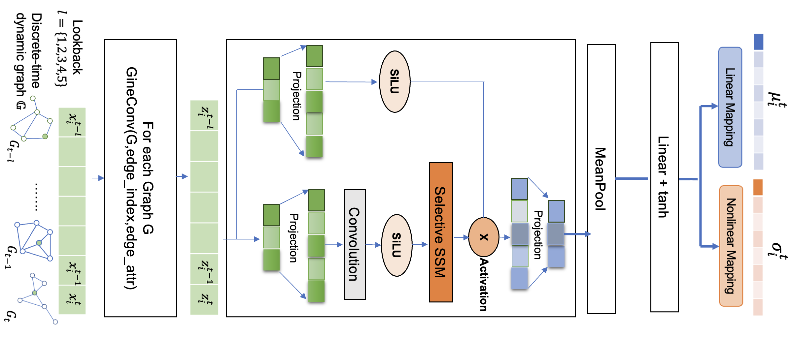

I am a PhD student in the Department of Data Science at the New Jersey Institute of Technology (NJIT), advised by Dr. Mengjia Xu and a member of the Xu Lab. My research explores how hyperbolic geometry, state‑space models, and graph neural networks can be used to build efficient large language models and dynamic graph embeddings.
Recent work includes the Hierarchical Mamba framework, which combines efficient Mamba2 state‑space models with hyperbolic spaces to capture hierarchical relationships in language data, and a comparative study of dynamic graph embedding approaches using transformers and the Mamba architecture. In addition to these projects, I continue to develop hyperbolic models for other domains, exploring how curvature‑aware embeddings can benefit a wide range of applications. I was also involved in surveying, and organizing the rapidly growing body of work on hyperbolic large language models, which forms the basis of my recent survey accepted in SIAM Review.



Email: sp3463@njit.edu
Address: New Jersey Institute of Technology, Newark, NJ 07102